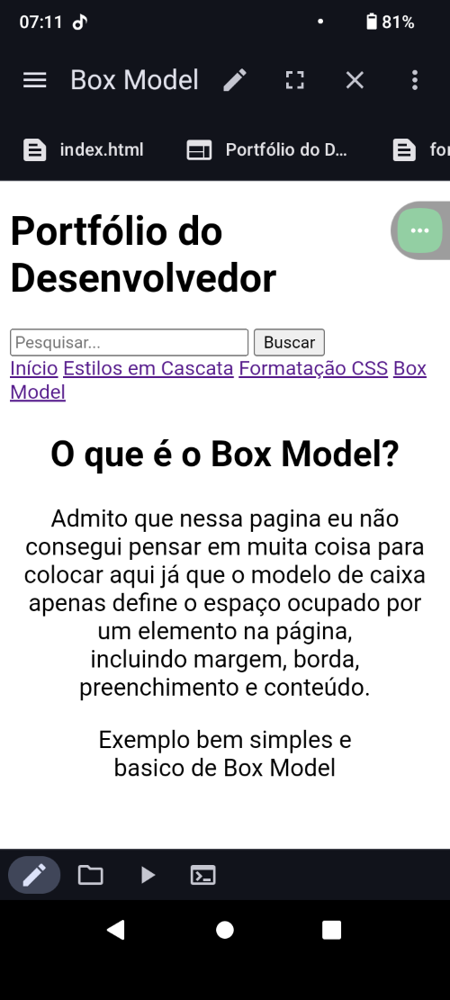

Bem-vindo ao meu Portfólio
Este portfólio foi criado para demonstrar diversos conceitos fundamentais de CSS aplicados em um
Aqui, você encontrará explicações e exemplos práticos que mostram como o CSS é utilizado para estilizar elementos em uma página web.
Navegue pelas seções para aprender sobre cascata de estilos,formatação de texto
e o modelo de caixas (Box Model).
Apresentação dos criadores.
meu nome é Felipe Brito Martinez e o do meu colega é arthur Bruno,
nós somos estudantes da ETEC Elias Nechar, estamos no ensino medio e
estamos no curso de informatica para internet, como estamos no 1°ano
nessa aula em especifico fomos introduzidos a duas linguagens de
programação: o HTML e o CSS, este site é o resultado de boa parte
do nós aprendemos esse ano, mas algumas coisas aconteceram durante
o processo de programação e tive que refazer boa parte do site em
em um aplicativo e aparelho que não estou acostuma a usar para escrever
codigos o que por algum motivo eu não consigo fazer o css aparecer o que,
o que levou a eu não conseguir modificar o css do jeito que eu precisava,
se eu fizesse eu estaria arriscando mecher em alguma parte do codigo sem querer
e só descobrir na hora da apresentação.

um exeplo de como fica o site nesse aplicativo.